Esta aplicación de escritorio permite registrar motores, mantenimientos, fallas, técnicos e inventario de repuestos. Los datos se guardan en su equipo. No necesita un servidor para trabajar día a día.
Los permisos dependen de su rol (administrador, operador o solo lectura). Si no ve un botón o un menú, puede ser normal según su usuario.
2. Iniciar sesión
Abra Proélectrica Control Manager desde el escritorio o el menú Inicio.
Escriba su usuario y contraseña (los proporciona su administrador).
Pulse el botón para entrar o confirmar.
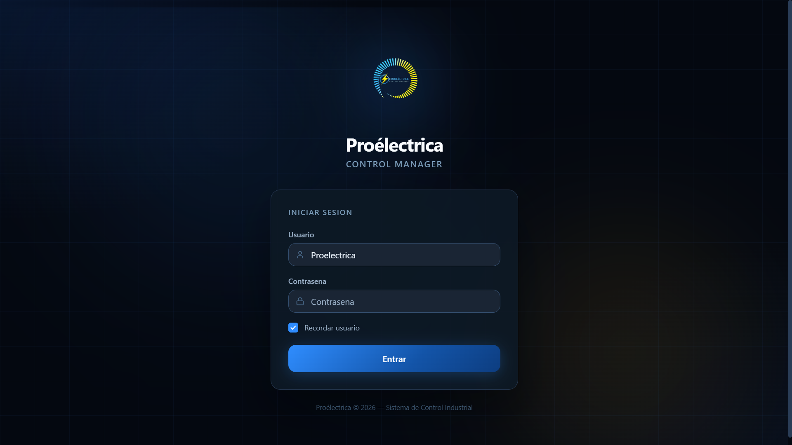
Figura 1. Pantalla de inicio de sesión: usuario, contraseña y acceso a la aplicación.
3. Navegar por la aplicación
Use el menú lateral para cambiar de módulo: Dashboard, Motores, Mantenimientos, etc.
Puede reducir o expandir el menú con el botón correspondiente.
El indicador de base de datos muestra si el programa tiene conexión con los datos locales.
Activar tema claro u oscuro y el botón de cerrar sesión suelen estar en la misma zona del menú.
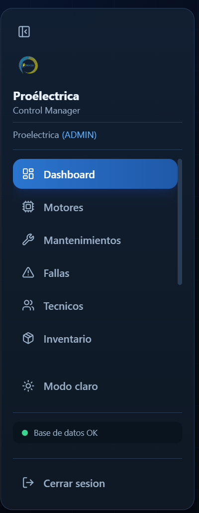
Figura 2. Menú lateral: acceso a cada módulo de la aplicación.
4. Dashboard
El Dashboard es el resumen del estado operativo: cantidad de motores, mantenimientos, fallas pendientes, avisos de stock mínimo, y gráficas por estado y por tiempo.
En el menú, pulse Dashboard.
Revise las tarjetas superiores y las gráficas inferiores.
Si hay alertas, aparecerán listadas en la parte inferior de la vista.
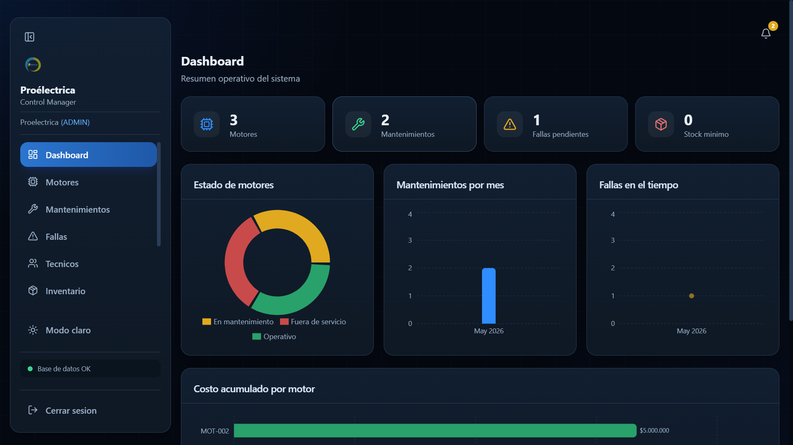
Figura 3. Vista Dashboard con indicadores y gráficas.
5. Motores
5.1 Lista y búsqueda
Pulse Motores en el menú.
Use la barra de búsqueda y los filtros (estado, orden, filas por página) para localizar un equipo.
Pase páginas con los controles de paginación si la lista es larga.
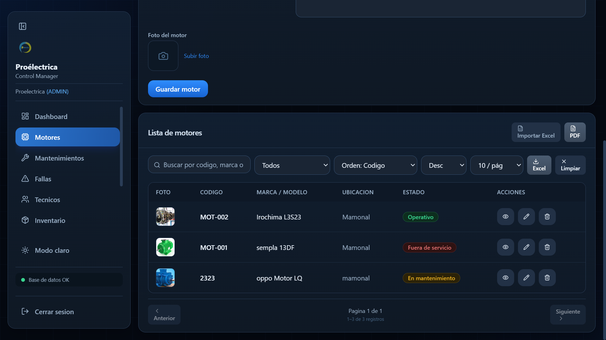
Figura 4. Listado de motores con búsqueda y filtros.
5.2 Crear un motor
En Motores, pulse Nuevo o equivalente para abrir el formulario.
Complete al menos los campos obligatorios (por ejemplo código y marca).
Opcional: fecha de instalación, ubicación, estado, observaciones o foto.
Guarde el registro.
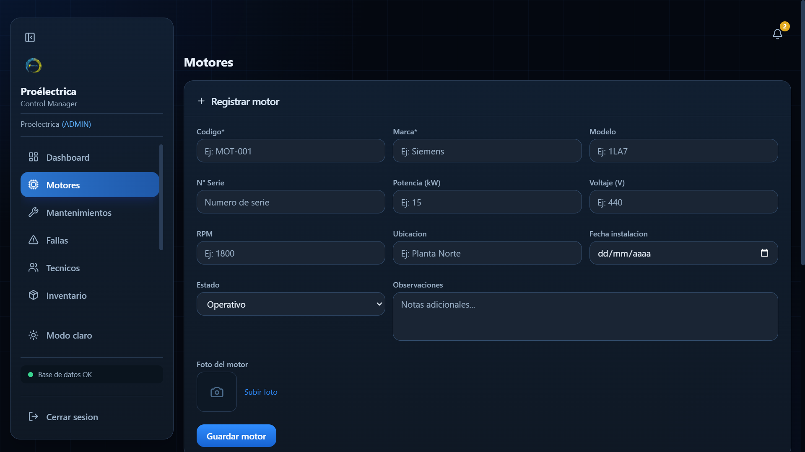
Figura 5. Formulario para dar de alta un motor.
5.3 Ver detalle de un motor
En la lista, pulse el icono de ver detalle (ojo) del motor deseado.
Se mostrará la ficha y los historiales de mantenimientos y fallas vinculados.
Desde el detalle suele poder exportar un informe PDF del motor, si la opción está visible.
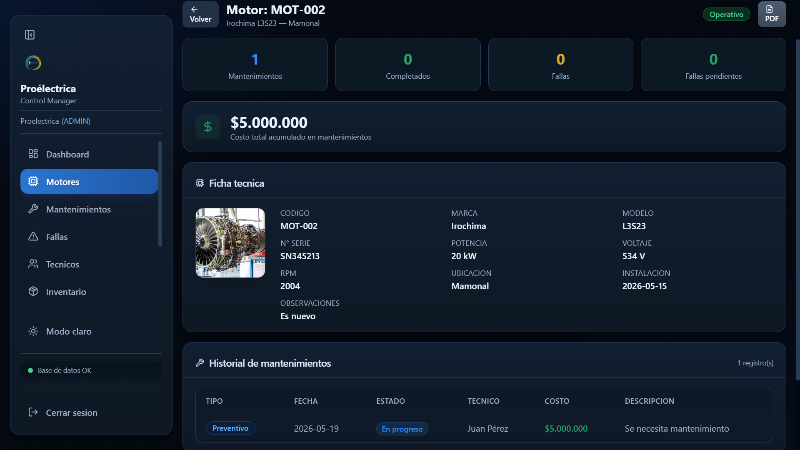
Figura 6. Vista detalle de un motor con su historial.
5.4 Importar motores desde Excel
Pulse Importar (o similar) en el módulo Motores.
Descargue la plantilla si aún no la tiene; no altere la fila de encabezados requerida.
Rellene el Excel y, en el asistente, elija Seleccionar archivo (.xlsx).
Revise la vista previa y confirme la importación. Si hay filas omitidas, leerá un aviso.
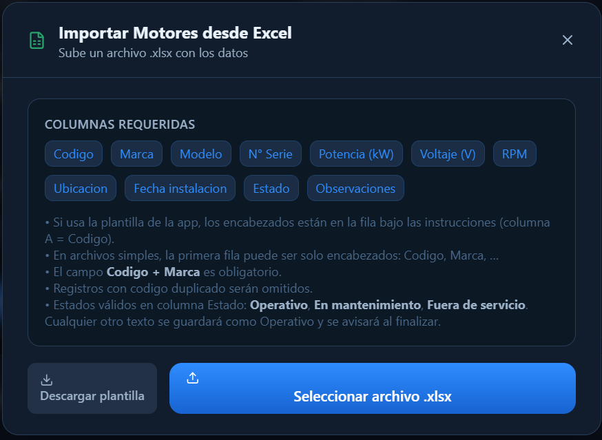
Figura 7. Asistente de importación desde Excel (plantilla y vista previa).
5.5 Exportar a Excel o PDF
Aplique filtros si solo desea exportar un subconjunto.
Pulse Exportar en la barra de filtros y elija Excel o PDF según el botón disponible.
Guarde el archivo en la carpeta que indique el sistema.
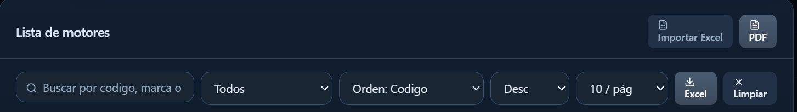
Figura 8. Exportación desde la barra de filtros (Excel/PDF).
5.6 Editar o eliminar
En la fila del motor, use el lápiz para editar (si su rol lo permite) y el icono de papelera para eliminar, confirmando cuando el programa lo pida.
6. Mantenimientos
Abra Mantenimientos en el menú.
Pulse Nuevo, seleccione motor, fecha y tipo de mantenimiento; complete coste, estado y descripción si aplica.
Guarde. Use filtros y exportación de forma análoga a Motores.
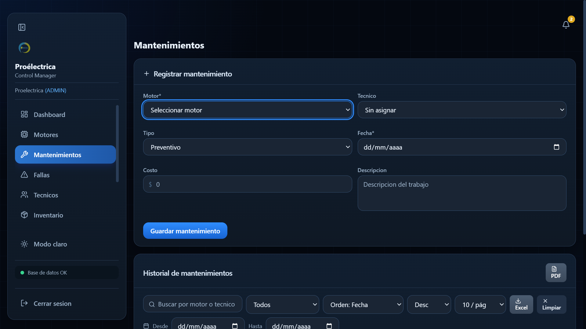
Figura 9. Registro o listado de mantenimientos.
7. Fallas
Abra Fallas.
Cree un registro con motor, tipo, prioridad, fecha de reporte y estado.
Actualice solución y estado cuando la falla quede resuelta.
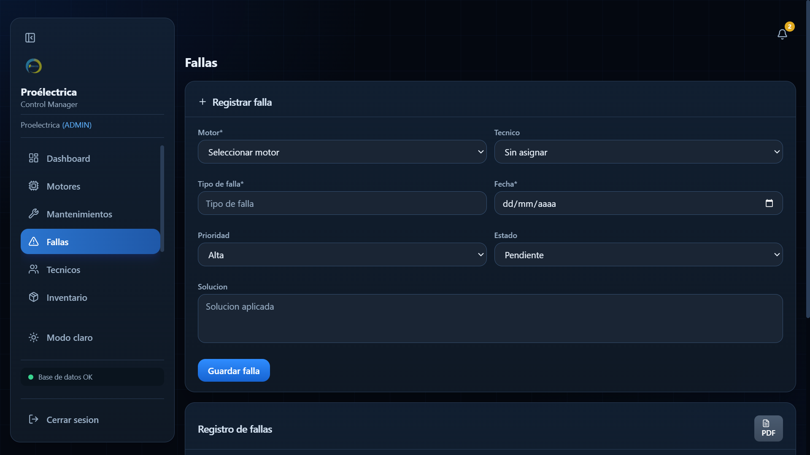
Figura 10. Módulo de fallas.
8. Técnicos
Registre el personal técnico. Puede importar o exportar desde Excel según los botones del módulo.
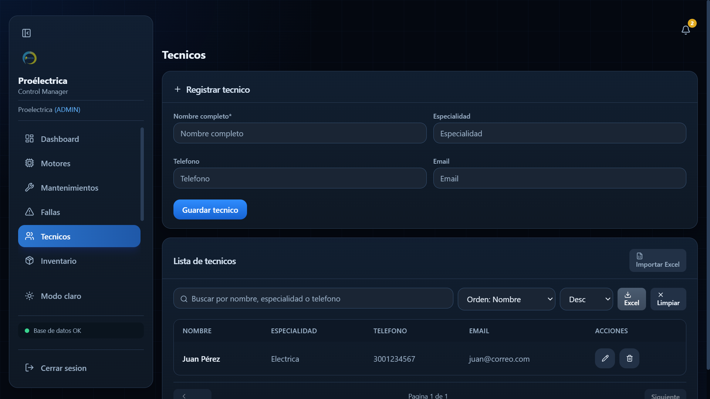
Figura 11. Gestión de técnicos.
9. Inventario
Administre repuestos, cantidades y stock mínimo. El sistema puede advertir cuando un artículo está bajo mínimo.
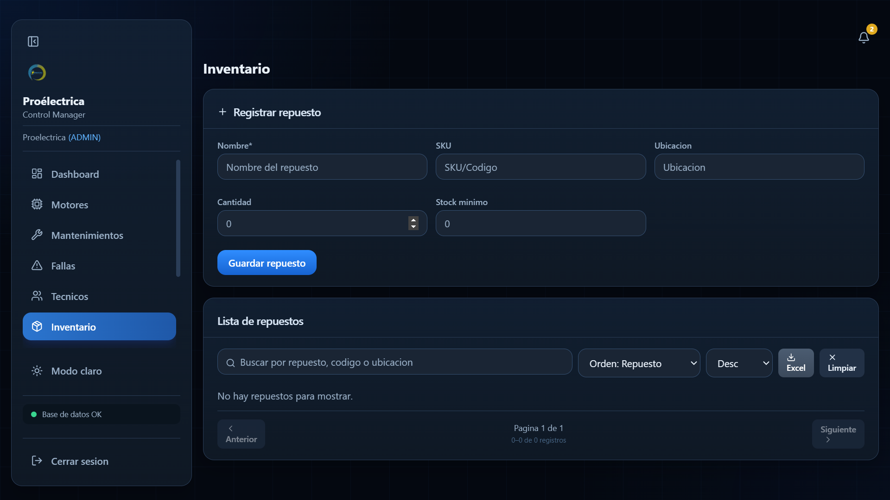
Figura 12. Inventario de repuestos.
10. Calendario
Vista mensual de mantenimientos; seleccione días o eventos para ver el detalle según la pantalla.
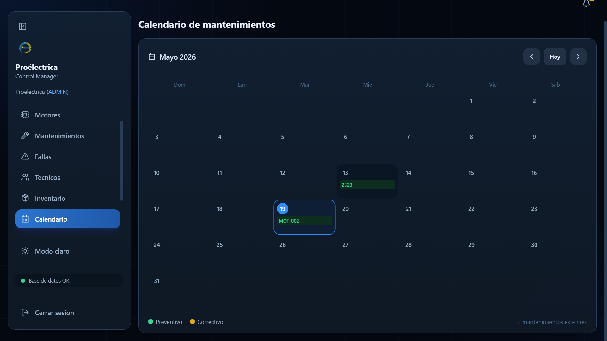
Figura 13. Calendario de mantenimientos.
11. Notificaciones
Pulse el icono de campana (arriba) para ver resúmenes: mantenimientos próximos, fallas pendientes y stock bajo. Las alertas se actualizan periódicamente.
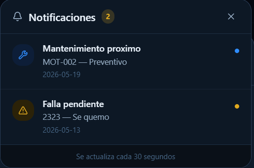
Figura 14. Panel de notificaciones.
12. Configuración
Abra Configuración en el menú.
Revise información del sistema (versión, sistema operativo, carpeta de datos).
Copia de seguridad: guarde un respaldo de la base cuando lo indique su política.
Restaurar: solo con precaución y copia previa; siga los mensajes en pantalla.
Buscar actualizaciones: si su instalador lo permite, comprobará versiones nuevas.